宣传片 / 实机录屏 · 重剪版
按你选的「按方案剪」做的。素材全部是游戏实机重新录的一条（常规赛一手 440.5 万 → 商店买「最左复制器」→ 晋级赛一手 9732 万 → 晋级32强 → 大厅点晚晴 → 给英格丽德送玫瑰），加上现有的 9 位女主 CG。还没上传 TapTap，你确认后在 00:01 上线后的新版本里替换。
每个视频下面可以选「通过 / 要改」并写备注，底部「复制结论」发给我。旧版对照：release-1103。
宣传片 v4.4（终版候选 · 1920×1080 · 23.9 秒）
在 v4.3 上只改一处：开头九女主海报从 2.4 秒缩到 2.0 秒（第 0 帧仍是完整海报，扫光同步压缩）；配乐整体提前 0.4 秒起播，后面每个切点仍落在原来的拍子上。其余镜头、顺序、台词、结尾完全不变：2.0s 起林晚晴 CG，其后每段时间点比 v4.3 早 0.4 秒，20.0–23.9s 扫光进宣传主图淡出。
第 0 帧：
第一个切点（1.7–2.3 秒）：
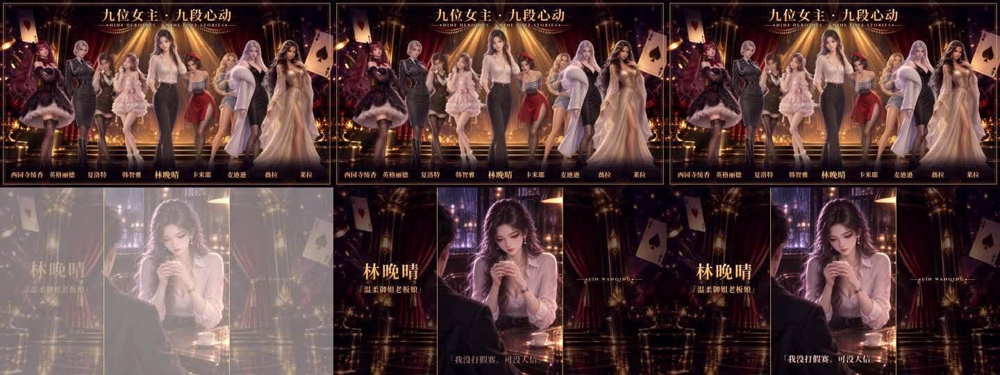
宣传片 v4.3（终版候选 · 1920×1080 · 24.3 秒）
在 v4.2 上只改两处：开头海报从 3.4 秒缩到 2.4 秒（5 拍，第 0 帧仍是完整海报，扫光同步压缩）；删掉结尾那段「9732 万 / 一手牌 · 打出一个亿」，薇拉 CG 之后直接扫光进宣传主图。
第 0 帧：
薇拉 → 宣传主图：
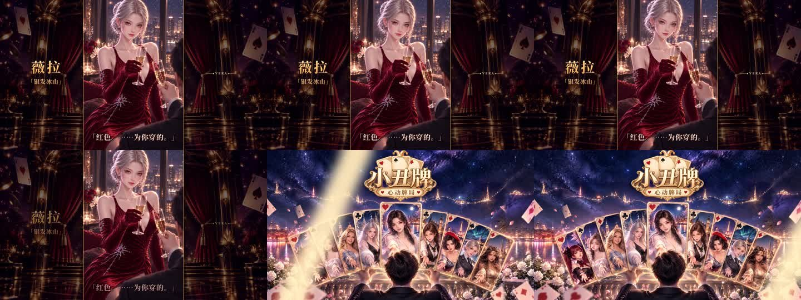
最后 2 秒：
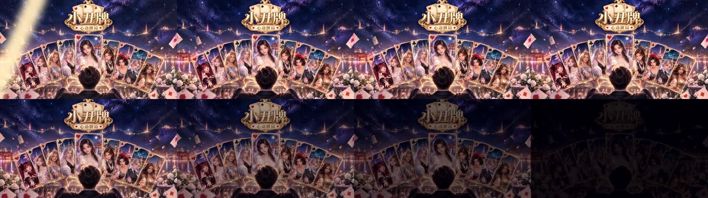
| 0–2.4s | 九位女主海报（第 0 帧即完整海报，柔光扫过，慢慢拉远） |
| 2.4–3.6s | 林晚晴 CG「我没打假赛。可没人信。」 |
| 3.6–4.8s | 实机：叠倍率 / 越叠越上头 |
| 4.8–6.0s | 西园寺绫香 CG「这次，换本小姐来找你。」 |
| 6.0–7.2s | 实机：每局随机 / 套路自己研究 |
| 7.2–8.4s | 夏洛特 CG「Objection. 反对。」（原声） |
| 8.4–9.6s | 实机：构筑你的牌组 / 牌型升级 |
| 9.6–12.0s | 英格丽德 CG「外卡——立正！」（原声）、韩智雅 CG「这一首，只给一个人。」 |
| 12.0–13.2s | 实机：装备连锁 / 倍率翻倍 |
| 13.2–15.6s | 莱拉 CG「约定兑现？不。是我选你。」、卡米耶 CG「这一次撩你，是真心的哦。」 |
| 15.6–16.8s | 实机：心动对决 / 与她同桌 |
| 16.8–18.0s | 麦迪逊 CG「这些，才是我真正的家人。」 |
| 18.0–20.2s | 实机：击败王牌 / 晋级32强 |
| 20.2–22.3s | 薇拉红裙 CG「红色。……为你穿的。」（原声） |
| 22.3–24.3s | 扫光 + 柔和闪白进入高清宣传主图，慢推约 2 秒，最后 1 秒淡出；音乐同时淡出 |
宣传片 v4.2（终版候选 · 1920×1080 · 26.5 秒）
按你的要求只调顺序：九女主海报放到最前（第 0 帧 = 首页卡片封面，九张脸和标题都完整）；中间实机和 CG 穿插原样不动；原来开头的「9732 万一手牌」和宣传主图挪到最后，以宣传主图收尾；原来的 logo 结尾卡和那句「一手牌打出一个亿，九个女主等你回家」删掉了。
第 0 帧：
最后 2 秒：
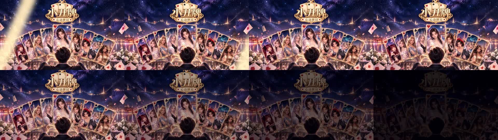
| 0–3.4s | 九位女主海报开场：第 0 帧就是完整海报（九人 + 标题 + 名字），随后一道柔光扫过，慢慢拉远 |
| 3.4–4.6s | 林晚晴 CG「我没打假赛。可没人信。」 |
| 4.6–5.8s | 实机：叠倍率 / 越叠越上头 |
| 5.8–7.0s | 西园寺绫香 CG「这次，换本小姐来找你。」 |
| 7.0–8.2s | 实机：每局随机 / 套路自己研究 |
| 8.2–9.4s | 夏洛特 CG「Objection. 反对。」（原声） |
| 9.4–10.6s | 实机：构筑你的牌组 / 牌型升级 |
| 10.6–13.0s | 英格丽德 CG「外卡——立正！」（原声）、韩智雅 CG「这一首，只给一个人。」 |
| 13.0–14.2s | 实机：装备连锁 / 倍率翻倍 |
| 14.2–16.6s | 莱拉 CG「约定兑现？不。是我选你。」、卡米耶 CG「这一次撩你，是真心的哦。」 |
| 16.6–17.8s | 实机：心动对决 / 与她同桌 |
| 17.8–19.0s | 麦迪逊 CG「这些，才是我真正的家人。」 |
| 19.0–21.2s | 实机：击败王牌 / 晋级32强 |
| 21.2–23.3s | 薇拉红裙 CG「红色。……为你穿的。」（原声） |
| 23.3–24.5s | 实机：9732 万落下，「一手牌 / 打出一个亿」 |
| 24.5–26.5s | 一道扫光进入高清宣传主图（自带「小丑牌 · 心动牌局」标题），慢推停留，最后 1 秒柔和淡出；音乐同时淡出，没有尾音 |
宣传片 v4.1（终版候选 · 1920×1080 · 28.4 秒）
只改了一处：结尾九位女主海报里，后排两侧的人往外挪开（夏洛特 / 智雅 / 卡米耶 / 麦迪逊），卡米耶不再被晚晴挡住，九张脸都完整露出；其余和 v4 完全一样。
宣传片 v4（横屏 1920×1080 · 28.4 秒 · 每张女主 CG 都配一句台词）
在 v3 基础上：每张女主 CG 下方加一句她自己的台词，都取自那张 CG 所在剧情，样式和位置跟薇拉那句一样；切到 CG 后约 0.1 秒浮现。CG 镜头从 0.72–0.96 秒加长到 1.2 秒，保证读得完；实机镜头相应从 1.44 缩到 1.2 秒（加速略提高），海报和结尾各缩 0.24–0.48 秒。夏洛特、英格丽德、薇拉三句有游戏原声，说话时音乐压低；其他句只有字幕。
每个 CG 镜头 + 台词：
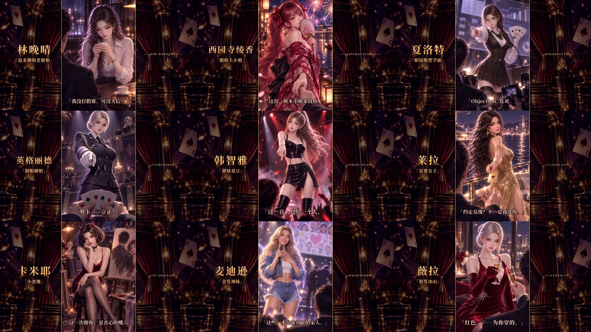
| 2.2–3.4s | 林晚晴 「我没打假赛。可没人信。」 出处：main.lua，wanqing_cg3 这场她自己说的 |
| 4.6–5.8s | 西园寺绫香 「这次，换本小姐来找你。」 出处：ayaka.lua，ayaka_cg3 |
| 7.0–8.2s | 夏洛特 「Objection. 反对。」 出处：charlotte.lua，charlotte_cg4 出现前的上一句 · 有原声（英语） |
| 9.4–10.6s | 英格丽德 「外卡——立正！」 出处：ingrid.lua，ingrid_cg1 · 有原声（德语） |
| 10.6–11.8s | 韩智雅 「这一首，只给一个人。」 出处：jiya.lua，jiya_cg5 |
| 13.0–14.2s | 莱拉 「约定兑现？不。是我选你。」 出处：layla.lua，layla_cg5 |
| 14.2–15.4s | 卡米耶 「这一次撩你，是真心的哦。」 出处：camille.lua，camille_cg5 |
| 16.6–17.8s | 麦迪逊 「这些，才是我真正的家人。」 出处：madison.lua，madison_cg4 出现前的上一句 |
| 20.0–22.2s | 薇拉 「红色。……为你穿的。」 出处：vera.lua 第 94 行（同 v3） · 有原声（俄语） |
其余镜头同 v3：0–1.0 宣传主图 → 实机「一手牌 / 打出一个亿」→ 叠倍率 → 每局随机（三局开局 + 路线）→ 构筑你的牌组（买装备 + 牌型升级）→ 装备连锁 → 心动对决 → 击败王牌 / 晋级32强 → 薇拉 → 九位女主海报（22.2–25.5s）→ logo（25.5–28.4s）。
宣传片 v3（横屏 1920×1080 · 27.4 秒 · 11-03 第三轮）
在 v2 基础上：立绘统一比例、头顶留约 8% 空间、腿部被画面下沿自然裁切；去掉所有张嘴大笑的表情；九女主海报改用每人默认皮肤（比赛服 match_normal），一道光爆同时登场，晚晴居中最前、其余八人左右对称分两层；新录了「每局随机 / 构筑牌组 / 牌型升级」的实机；文字缓入快出，所有画面统一调色，CG 和静帧慢推，薇拉台词时音乐压低，文字都在 5% 安全区内，logo 扫光后停留约 2 秒。
第 0 帧：
实机 + 立绘（看头顶留白）：
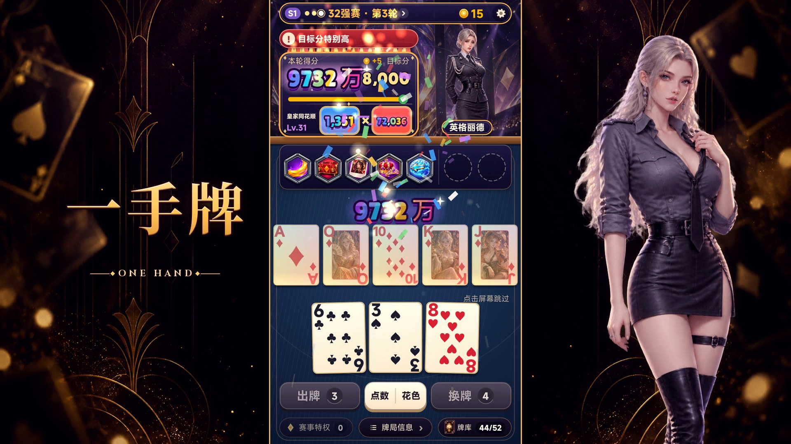
九位女主海报（默认皮肤）：
| 0–1.0s | 宣传主图（高清）慢推 → 扫光 + 闪白。 |
| 1.0–2.4s | 实机：晋级赛 9732 万。左「一手牌 / ONE HAND」+ 右英格丽德 → 左晚晴 + 右「打出一个亿」。 |
| 2.4–3.4s | 林晚晴 CG。 |
| 3.4–4.8s | 实机：装备连锁（2.5 倍速）。「叠倍率」+ 绫香 → 夏洛特 +「越叠越上头」。 |
| 4.8–5.8s | 西园寺绫香 CG。 |
| 5.8–7.2s | 新：三局完全不同的开局（不同赛段、对手、牌背和装备）+ 赛段路线选择，每 0.36 秒一切。「每局随机 / ROGUELIKE」+ 智雅 → 莱拉 +「套路自己研究」。 |
| 7.2–8.0s | 夏洛特 CG。 |
| 8.0–9.4s | 新：商店买「扩编增幅器」飞进装备栏 → 开星球补给包，高牌 1 级 → 2 级。「构筑你的牌组 / DECKBUILDING」+ 卡米耶 → 麦迪逊 +「牌型升级」。 |
| 9.4–10.8s | 英格丽德 CG、韩智雅 CG。 |
| 10.8–12.3s | 实机：晋级赛倍率连锁。「装备连锁」+ 薇拉 → 晚晴 +「倍率翻倍」。 |
| 12.3–13.7s | 莱拉 CG、卡米耶 CG。 |
| 13.7–15.2s | 实机：大厅点晚晴。「心动对决」+ 绫香 → 英格丽德 +「与她同桌」。 |
| 15.2–15.9s | 麦迪逊 CG。 |
| 15.9–18.3s | 实机：皇家同花顺切入 → 9732 万 → 击败 → 晋级32强。「击败王牌」+ 夏洛特 → 薇拉 +「晋级32强」。 |
| 18.3–20.4s | 薇拉红裙 CG +「红色。……为你穿的。」原声（音乐压低）。 |
| 20.4–24.3s | 九位女主海报：光爆中九人同时登场，慢慢拉远；标题 + 九个名字。 |
| 24.3–27.4s | logo 放大入场 + 扫光，「一手牌打出一个亿，九个女主等你回家」，停留后淡出。 |
宣传片 v2（横屏 1920×1080 · 25.5 秒 · 11-03 第二轮）
按你的意见改：第 0 帧是 16:9 宣传主图；实机画面始终正中，两侧换成海报字 + 女主立绘（每半段左右互换）；字体换成宋体粗体金色渐变 + 细描边 + 浮雕 + 光晕，配英文小字；实机和女主 CG 全程穿插；九宫格换成「九位女主」海报；结尾改成「九个女主」。
第 0 帧：
九位女主海报（20.2–24 秒）：
| 0–1.0s | 宣传主图（高清版）慢推，最后 0.34 秒一道斜向扫光 + 闪白切入。 |
| 1.0–2.4s | 实机：晋级赛一手 9732 万落下。左「一手牌 / ONE HAND」+ 右英格丽德立绘 → 换边：左林晚晴立绘 + 右「打出一个亿 / 100,000,000 POINTS」。 |
| 2.4–3.4s | 林晚晴 CG（金框、慢推），左名字 +「温柔御姐老板娘」，右英文名。 |
| 3.4–4.8s | 实机：常规赛装备连锁（2.5 倍速）。「叠倍率」+ 绫香 → 夏洛特 +「越叠越上头」。 |
| 4.8–5.8s | 西园寺绫香 CG。 |
| 5.8–7.2s | 实机：商店买最左复制器 → 下一手（2 倍速）。「爆数值」+ 智雅 → 莱拉 +「构筑你的卡组」。 |
| 7.2–8.7s | 夏洛特 CG、英格丽德 CG（各 0.72 秒）。 |
| 8.7–10.1s | 实机：晋级赛倍率连锁（2.5 倍速）。「装备连锁」+ 卡米耶 → 麦迪逊 +「倍率翻倍」。 |
| 10.1–11.6s | 韩智雅 CG、莱拉 CG。 |
| 11.6–13.0s | 实机：大厅点晚晴（原声）。「心动对决」+ 薇拉 → 绫香 +「九位女主」。 |
| 13.0–14.4s | 卡米耶 CG、麦迪逊 CG。 |
| 14.4–16.8s | 实机：皇家同花顺切入 → 9732 万 → 击败（2 倍速）→ 晋级32强。「一手打穿」+ 英格丽德 → 薇拉 +「晋级32强」。 |
| 16.8–19.0s | 薇拉红裙 CG，她的原声「红色。……为你穿的。」（字幕同款海报字）。 |
| 19.0–22.8s | 九位女主海报：生成的空舞台 + 九张立绘分三层由后往前每半拍入场，光柱、金框，标题「九位女主 · 九段心动」+ 英文，底部九个名字。 |
| 22.8–25.5s | logo +「一手牌打出一个亿，九个女主等你回家」+ PLAY THE HAND · WIN HER HEART，配乐淡出，无片尾高音。 |
宣传片 v1（横屏 1920×1080 · 23.7 秒 · 详情页第一个 / 可作首页推荐）
第 0 帧（首页卡片封面）：
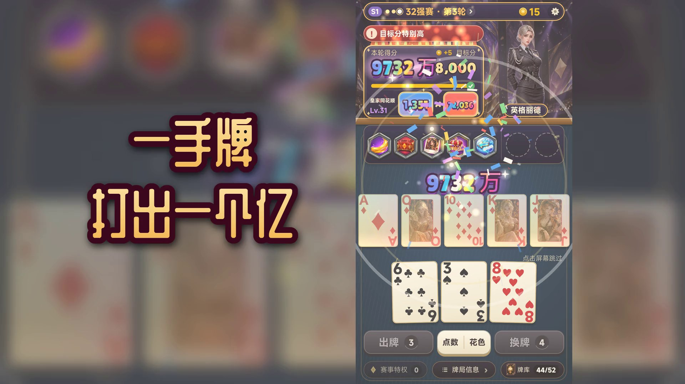
| 0–1.5s | 第 0 帧就是爆点：晋级赛一手牌刚落到 9732 万（实机），金光一闪，大字「一手牌 / 打出一个亿」。 |
| 1.5–5.0s | 「叠倍率」：两段装备连锁触发（常规赛 + 晋级赛），2.5 倍速，每段开头一闪。 |
| 5.0–7.0s | 「爆数值」：商店买下「最左复制器」→ 下一手直接选牌出牌，2 倍速。 |
| 7.0–13.5s | 九位女主 CG 卡点快切，每人 0.72 秒（配乐一拍半），白闪 + 慢推镜，左下角名字·人设：林晚晴 / 西园寺绫香 / 夏洛特 / 英格丽德 / 韩智雅 / 莱拉 / 卡米耶 / 麦迪逊 / 薇拉。 |
| 13.5–14.7s | 九宫格同屏，「九位女主，九段心动」。 |
| 14.7–18.7s | 「一手打穿」：皇家同花顺切入 → 9732 万 → 击败（2 倍速）→ 「晋级32强！」。 |
| 18.7–21.1s | 薇拉红裙 CG，她自己的配音「红色。……为你穿的。」（游戏原声，俄语配音 + 中文字幕）。 |
| 21.1–23.7s | logo +「一手牌打出一个亿，九个老婆等你回家」，配乐自然淡出，没有片尾高音。 |
声音：游戏标题曲（125 BPM，女主快切卡在拍点上）+ 游戏自己的出牌 / 倍率 / 结算音效 + 薇拉原声。
实机录屏 v4.1（终版候选 · 竖屏 1080×1920 · 29.8 秒 · 玩法 14.4 秒 / 女主 15.3 秒）
| 0.0–1.4s 1.4 秒 | 玩法 晋级赛皇家同花顺切入，9732 万 |
| 1.4–11.4s 10.0 秒 | 玩法 连续实机一手（1.5 倍速）：牌飞入 → 装备逐个触发、倍率翻倍 → 皇家同花顺 653.9 万 → 过关 |
| 11.4–14.4s 3.0 秒 | 女主 wanqing_cg8 「爸爸说，好感要我自己说出口。」→「江白，我喜欢你。从你淋着雨走进来那天起。」+ 好感爆表 配音：无（游戏里没有这句的配音） |
| 14.4–15.2s 0.8 秒 | 玩法 另一局开局（不同赛段、对手、装备） |
| 15.2–18.1s 2.9 秒 | 女主 ayaka_cg5 「那就换个方式说。」→「……好き。听清楚了吗，笨蛋。」 配音：无 |
| 18.1–18.9s 0.8 秒 | 玩法 星球补给包：牌型升级 |
| 18.9–21.9s 3.0 秒 | 女主 ingrid_cg5 「从现在开始，不准叫我教官。」→「叫我英格丽德。这是最后一道命令。」 配音：无 |
| 21.9–22.6s 0.7 秒 | 玩法 晋级赛：倍率连锁（1.5 倍速） |
| 22.6–25.5s 2.9 秒 | 女主 layla_cg5 「能赢我的男人，我嫁——那句话，作废了。」→「约定兑现？不。是我选你。」 配音：无 |
| 25.5–26.2s 0.7 秒 | 玩法 晋级32强！ |
| 26.2–29.8s 3.6 秒 | 女主 vera_cg5 「上次，四个字，没说完。」→「我喜欢你。」→「……再说一遍，也可以。」 配音：无 |
在 v4 上压紧：结构、顺序、CG 不变。开头钩子 1.4 秒；连续一手只留牌在动的部分（10.07 秒，平台最低要求）；每位女主约 3 秒，从 CG 完整显示开始，两句台词的中间跳过旁白直接切到第二句；过渡每段 0.75 秒，切在倍率弹出 / 升级 / 晋级的瞬间；薇拉 3.5 秒。加速 ≤ 1.5 倍，只有游戏原声。
每秒一帧：
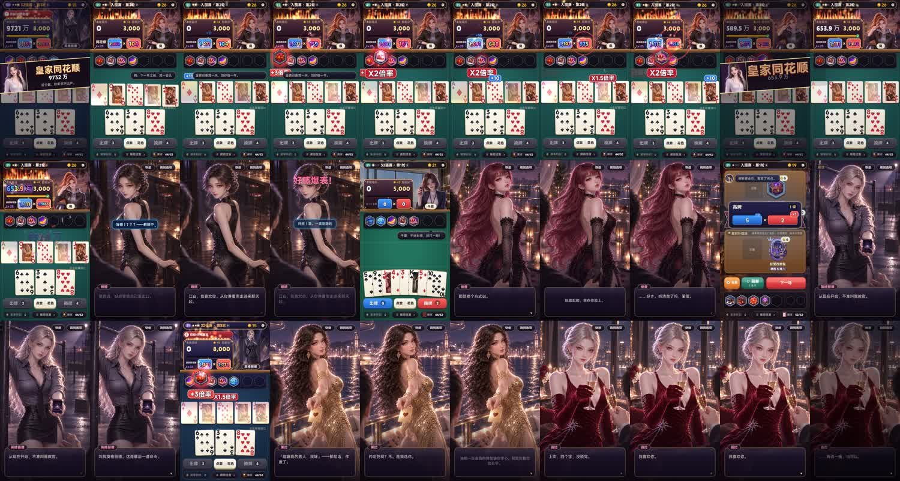
实机录屏 v4（终版候选 · 竖屏 1080×1920 · 34.9 秒 · 玩法 15.8 秒 / 女主 19.1 秒）
| 0.0–1.8s | 玩法 晋级赛皇家同花顺切入，9732 万 |
| 1.8–11.8s | 玩法 连续实机一手（1.5 倍速）：选 5 张 → 出牌 → 装备逐个触发、倍率翻倍 → 皇家同花顺 653.9 万 |
| 11.8–15.6s | 女主 wanqing_cg8 「江白，我喜欢你。从你淋着雨走进来那天起。」+ 好感爆表 配音：无（游戏里没有这句的配音） |
| 15.6–16.6s | 玩法 另一局开局（不同赛段、对手、装备） |
| 16.6–20.3s | 女主 ayaka_cg5 「本小姐说过，只说一次……」→「……好き。听清楚了吗，笨蛋。」 配音：无 |
| 20.3–21.3s | 玩法 星球补给包：牌型升级 |
| 21.3–25.3s | 女主 ingrid_cg5 「从现在开始，不准叫我教官。」→「叫我英格丽德。这是最后一道命令。」 配音：无 |
| 25.3–26.3s | 玩法 晋级赛：倍率连锁（1.5 倍速） |
| 26.3–29.9s | 女主 layla_cg5 「能赢我的男人，我嫁——那句话，作废了。」→「约定兑现？不。是我选你。」 配音：无 |
| 29.9–30.9s | 玩法 晋级32强！ |
| 30.9–34.9s | 女主 vera_cg5 「上次，四个字，没说完。」→「我喜欢你。」+ 爱心 配音：无 |
女主全部换成各自的恋人结局高潮 CG（新录一条 showcase6，在游戏剧情回忆里实际播放），每人约 3.6–4 秒，台词取那场最打动人的一句。这几场结局台词游戏里都还没有配音，所以只有对话框文字。玩法只保留：开头钩子 1.8 秒 + 平台要求的连续实机一手 10 秒 + 4 段 1 秒过渡。没有字幕、旁白、贴纸、画中画；加速 ≤ 1.5 倍；响度统一。
每秒一帧：
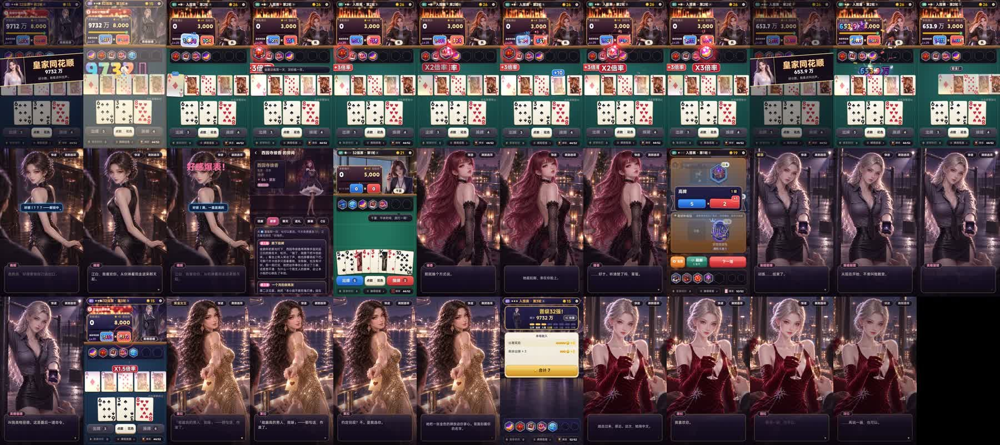
实机录屏 v3（终版候选 · 竖屏 1080×1920 · 45.5 秒 · 玩法和女主交替）
| 0.0–2.8s | 玩法 晋级赛皇家同花顺切入 → 9732 万落下 |
| 2.8–14.3s | 玩法 商店买下卡文迪什 → 下一局连续出牌：装备逐个触发（含新买的 ×3），653.9 万过关 |
| 14.3–17.7s | 女主 晚晴拥抱 CG，原声「……刚才那个，不算。」 |
| 17.7–20.1s | 玩法 三局不同的开局：不同赛段、对手、牌背和装备 |
| 20.1–24.4s | 女主 绫香烟花 CG，原声「这次，换本小姐来找你。」 |
| 24.4–27.2s | 玩法 商店：装备飞进装备栏 → 星球补给包，牌型升级 |
| 27.2–29.6s | 女主 智雅舞台 CG |
| 29.6–31.8s | 玩法 晋级赛开局：英格丽德坐镇，特大目标分，选牌 |
| 31.8–34.4s | 女主 英格丽德 CG，原声「外卡——立正！」 |
| 34.4–37.0s | 玩法 击败 → 晋级32强 |
| 37.0–39.2s | 女主 大厅点薇拉，原声 + 气泡「红色。……为你穿的。」 |
| 39.2–41.7s | 玩法 常规赛：装备连锁，倍率翻倍 |
| 41.7–45.5s | 女主 薇拉恋人结局 CG：「上次，四个字，没说完。」→「我喜欢你。」+ 爱心 |
开头 0–14.3 秒是钩子 + 平台要求的那段连续实机（商店买装备 → 下一局整手 10.4 秒）；之后每段 2.2–4.3 秒，玩法 / 女主严格交替，同类最长不超过 4.3 秒。用的是 v2 同一批实录素材和原声；没有字幕、旁白、贴纸、画中画；加速 ≤ 1.5 倍；响度统一（-16 LUFS）。
每秒一帧：
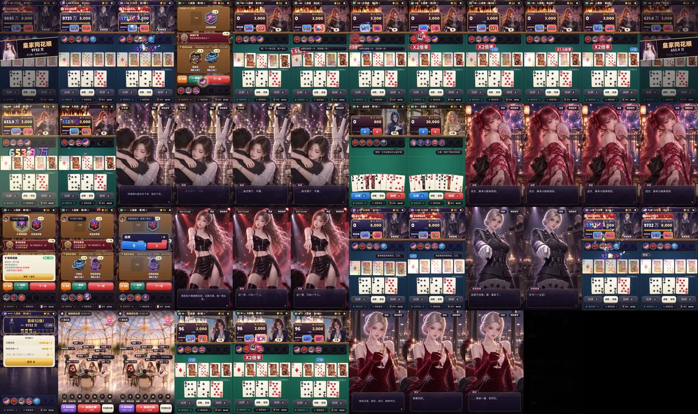
实机录屏 v2（竖屏 1080×1920 · 44.8 秒 · 女主互动约 66%）
| 0–3.5s | 实机：晋级赛皇家同花顺切入 → 9732 万落下（第 0 帧就是切入画面） |
| 3.5–4.6s | 商店：买下「卡文迪什」，飞进装备栏（1.5 倍速） |
| 4.6–15.0s | 连续实机 10.4 秒（1.5 倍速）：下一局选牌、出皇家同花顺，装备逐个触发（含刚买的 ×3），653.9 万过关 |
| 15.0–18.6s | 晚晴拥抱 CG（wanqing_cg1），原声「……刚才那个，不算。」 |
| 18.6–22.9s | 绫香烟花 CG（ayaka_cg3），原声「这次，换本小姐来找你。」 |
| 22.9–25.1s | 英格丽德 CG（ingrid_cg1），原声「外卡——立正！」 |
| 25.1–27.3s | 智雅舞台 CG（jiya_cg5） |
| 27.3–29.5s | 莱拉金裙 CG（layla_cg5） |
| 29.5–32.2s | 薇拉剧情：选项被点选 → 她的原声回应「……不会有那一天。」 |
| 32.2–34.7s | 英格丽德房间：送玫瑰，她的台词气泡 + 好感上涨 |
| 34.7–36.5s | 薇拉房间：换装 → 限定装扮（红丝绒礼服） |
| 36.5–38.7s | 大厅：点薇拉，原声 + 气泡「红色。……为你穿的。」 |
| 38.7–40.1s | 薇拉的 CG 图鉴 |
| 40.1–44.8s | 薇拉恋人结局 CG（vera_cg5）：「上次，四个字，没说完。」→「我喜欢你。」+ 爱心收尾 |
全部是游戏里实录（新录一条 showcase5：商店 → 出牌 → 剧情回忆里的 CG 和配音 → 送礼 → 换装 → 大厅 → 图鉴 → 结局）。没有加字幕、旁白、贴纸和画中画；只有游戏原声，响度统一（配音说话时游戏自己会压低音乐）；加速不超过 1.5 倍；前 4 秒就是出牌玩法，连续实机超过 10 秒。卡牌约 15 秒，女主互动约 30 秒。
每秒一帧：
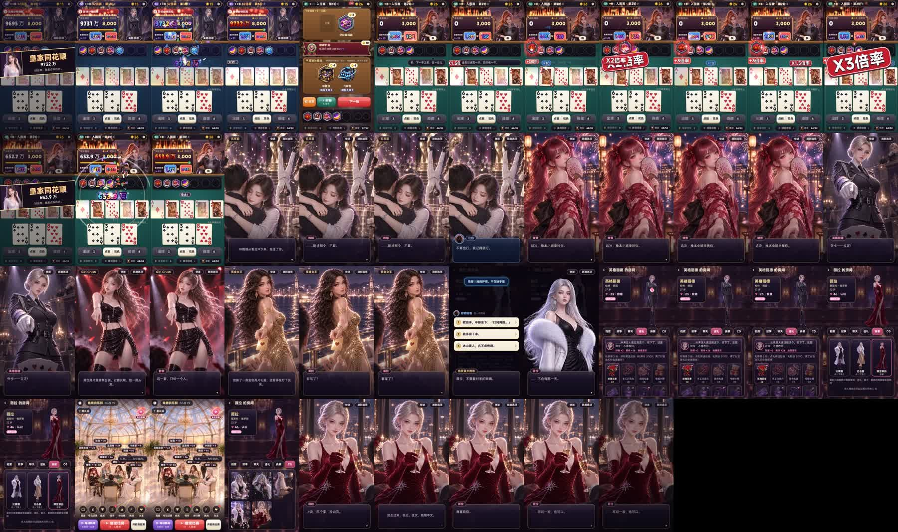
实机录屏（竖屏 1080×1920 · 34.0 秒 · 详情页第二个）
| 0–2.8s | 直接从大牌开始：晋级赛最后一个 ×倍率 → 「皇家同花顺」切入 → 9732 万落下。 |
| 2.8–12.2s | 常规赛连续两手（1.5 倍速）：先出一个对子（96 分），再选 5 张皇家同花顺，装备一个个触发，440.5 万。 |
| 12.2–15.2s | 结算 → 商店：刷新，买下「最左复制器」（1.5 倍速）。 |
| 15.2–17.8s | 大厅点晚晴：她的配音 + 气泡。 |
| 17.8–21.0s | 英格丽德的房间：送玫瑰，她的台词 + 好感上涨。 |
| 21.0–23.9s | 薇拉剧情：选项 → 她的配音回应。 |
| 23.9–32.0s | 晋级赛：特大目标分 → 选牌（带着新装备）→ 倍率连锁 → 9732 万 → 击败（1.5 倍速）。 |
| 32.0–34.0s | 「晋级32强！」收尾。 |
按 TapTap 规则：只有游戏自己的画面和声音，没有加字幕、旁白、画中画；前 3 秒就是核心玩法；连续出牌超过 10 秒；加速不超过 1.5 倍。